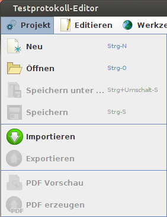
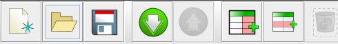

Wie kann man aus Anwendungen heraus das Erstellen von Anwenderdokumentationen beschleunigen? Menüs und Werkzeugleisten existieren bereits - da wäre es doch schön, wenn man in der Anwenderdokumentation nicht dasselbe nochmals mühsam einzeln aufschreiben müsste, sondern durch Knopfdruck generieren könnte?
Szenario
Das Verfassen von Anwenderdokumentationen geschieht oft erst nach Ende der Entwicklung. Optimal wäre es, wenn es einen sauberen Satz von Dokumenten gäbe, der die Anforderungen klar spezifiziert und aus dem sich die Anwenderdokumentation ohne viel Arbeit ableiten ließe. Manchmal ist das aber nicht der Fall.Dann müsste man sich hinsetzen und jedes Menü und jede Werkzeugleiste langwierig dokumentieren. Das macht Arbeit und ist unbeliebt - man schiebt unbeliebte Arbeiten oft und so kommt es, daß die dringend benötigte Anwenderdokumentation sich mehr und mehr verspätet, bis sie dann innerhalb von zwei Tagen lieblos und hektisch zusammengedengelt wird, was man auch an der dann sicher niedrigeren Qualität bemerkt.
Vorschlag zur Lösung
Die hier vorgeschlagene Lösung geht davon aus, daß es sich bei der Anwendung um eine Java-Anwendung handelt und als Laufzeitumgebung mindestens Version 1.6 eingesetzt wird.Man ist dann in der Lage, einen Agent zu schreiben, dessen premain-Methode vor dem eigentlichen Programmstart ausgeführt wird. Diese Methode verankert einen AWT-Listener, der auf jegliche Signale aus der GUI reagiert. In diesem Listener wird eine Eventsignatur festgelegt (zum Beispiel: mittlere Maustaste drücken bei gleichzeitigem Festhalten von Shift und Ctrl), auf die hin für die Komponente, die das Ziel des Events war, spezieller Code ausgeführt wird.
Dieser Code könnte beliebigen Inhalt haben. Für den hier beschriebenen Anwendungszweck wird die Komponente analysiert: ist es eine Werkzeugleiste oder ein Menü, werden die enthaltenen Elemente untersucht und die gewonnenen Daten (Titel, Icons, URLs, Tooltips,...) benutzt um Fragmente einer Dokumentation zu erstellen.
So ergibt beispielsweise dieses Menü

dieses Docbook-Fragment:<table colsep="0" frame="none" rowsep="0" rules="none"> <tgroup cols="2"> <colspec colnum="1" colwidth="1*" /> <colspec colnum="2" colwidth="8*" /> <tbody> <row> <entry align="right"> <mediaobject> <imageobject> <imagedata fileref="de/netsysit/ressources/gfx/ca/neues%20Dokument_48.png"/> </imageobject> </mediaobject> </entry> <entry valign="middle"> <para> Erzeugt ein neues Testprotokoll</para> </entry> </row> <row> <entry align="right"> <mediaobject> <imageobject> <imagedata fileref="de/netsysit/ressources/gfx/ca/%c3%b6ffnen_48.png"/> </imageobject> </mediaobject> </entry> <entry valign="middle"> <para> Lädt ein Testprotokoll aus einer XML-Datei</para> </entry> </row> <row> <entry align="right"> <mediaobject> <imageobject> <imagedata fileref="de/netsysit/ressources/gfx/ca/text%20in%20datei%20speichern_48.png"/> </imageobject> </mediaobject> </entry> <entry valign="middle"> <para> Speichert das Testprotokoll unter neuem Namen in eine XML-Datei</para> </entry> </row> <row> <entry align="right"> <mediaobject> <imageobject> <imagedata fileref="de/netsysit/ressources/gfx/ca/save_48.png"/> </imageobject> </mediaobject> </entry> <entry valign="middle"> <para> Speichert das Testprotokoll als XML-Datei</para> </entry> </row> <row> <entry align="right"> <mediaobject> <imageobject> <imagedata fileref="de/netsysit/ressources/gfx/ca/import_48.png"/> </imageobject> </mediaobject> </entry> <entry valign="middle"> <para> Importiert eine Menge vorher exportierter Testfälle und Kategorien</para> </entry> </row> <row> <entry align="right"> <mediaobject> <imageobject> <imagedata fileref="de/netsysit/ressources/gfx/ca/export_48.png"/> </imageobject> </mediaobject> </entry> <entry valign="middle"> <para> Exportiert die ausgewählten Testfälle und Kategorien</para> </entry> </row> <row> <entry align="right"> <mediaobject> <imageobject> <imagedata fileref="de/netsysit/ressources/gfx/ca/reporting_vorschau_48.png"/> </imageobject> </mediaobject> </entry> <entry valign="middle"> <para> Präsentiert eine Vorschau der aktuell bearbeiteten Test-Prozedur</para> </entry> </row> <row> <entry align="right"> <mediaobject> <imageobject> <imagedata fileref="images/docgenerator5259967760808336401_48.png"/> </imageobject> </mediaobject> </entry> <entry valign="middle"> <para> Erzeugt ein PDF-Dokument aus dem Testprotokoll</para> </entry> </row> </tbody> </tgroup> </table>Diese Werkzeugleiste

dient als Ausgangspunkt für die Erzeugung dieses Docbook-Fragments:
<table colsep="0" frame="none" rowsep="0" rules="none"> <tgroup cols="2"> <colspec colnum="1" colwidth="1*" /> <colspec colnum="2" colwidth="8*" /> <tbody> <row> <entry align="right"> <mediaobject> <imageobject> <imagedata fileref="de/netsysit/ressources/gfx/ca/neues%20Dokument_48.png"/> </imageobject> </mediaobject> </entry> <entry valign="middle"> <para> Creates a new resource bundle</para> </entry> </row> <row> <entry align="right"> <mediaobject> <imageobject> <imagedata fileref="de/netsysit/ressources/gfx/ca/%c3%b6ffnen_48.png"/> </imageobject> </mediaobject> </entry> <entry valign="middle"> <para> Open a resource bundle</para> </entry> </row> <row> <entry align="right"> <mediaobject> <imageobject> <imagedata fileref="de/netsysit/ressources/gfx/ca/save_48.png"/> </imageobject> </mediaobject> </entry> <entry valign="middle"> <para> Saves the resource bundle into a file</para> </entry> </row> <row> <entry align="right"> <mediaobject> <imageobject> <imagedata fileref="de/netsysit/ressources/gfx/ca/import_48.png"/> </imageobject> </mediaobject> </entry> <entry valign="middle"> <para> Analyzes the code in the selected Java source file and identifies possible keys </para> </entry> </row> <row> <entry align="right"> <mediaobject> <imageobject> <imagedata fileref="de/netsysit/ressources/gfx/ca/export_48.png"/> </imageobject> </mediaobject> </entry> <entry valign="middle"> <para> Moves a selected node in a different resource</para> </entry> </row> <row> <entry align="right"> <mediaobject> <imageobject> <imagedata fileref="de/netsysit/ressources/gfx/ca/tabelle_spalte%20einf%c3%bcgen_48.png"/> </imageobject> </mediaobject> </entry> <entry valign="middle"> <para> Adds a new language to the resource bundle</para> </entry> </row> <row> <entry align="right"> <mediaobject> <imageobject> <imagedata fileref="de/netsysit/ressources/gfx/ca/tabelle_zeile%20einf%c3%bcgen_48.png"/> </imageobject> </mediaobject> </entry> <entry valign="middle"> <para> Adds a new key to the resource bundle</para> </entry> </row> <row> <entry align="right"> <mediaobject> <imageobject> <imagedata fileref="de/netsysit/ressources/gfx/ca/icon%20l%c3%b6schen_48.png"/> </imageobject> </mediaobject> </entry> <entry valign="middle"> <para> Removes an enry from the resource bundle</para> </entry> </row> <row> <entry align="right"> <mediaobject> <imageobject> <imagedata fileref="images/docgenerator2220628434219725414_48.png"/> </imageobject> </mediaobject> </entry> <entry valign="middle"> <para> Looks upwards to the next key that is missing at least one translation </para> </entry> </row> <row> <entry align="right"> <mediaobject> <imageobject> <imagedata fileref="images/docgenerator2446537516857473496_48.png"/> </imageobject> </mediaobject> </entry> <entry valign="middle"> <para> Searches downwards for the next key that is missing at least one translation </para> </entry> </row> <row> <entry align="right"> <mediaobject> <imageobject> <imagedata fileref="de/netsysit/ressources/gfx/ca/alle%20knoten%20anzeigen_48.png"/> </imageobject> </mediaobject> </entry> <entry valign="middle"> <para> Expands all nodes and their children</para> </entry> </row> <row> <entry align="right"> <mediaobject> <imageobject> <imagedata fileref="de/netsysit/ressources/gfx/ca/alle%20knoten%20ausblenden_48.png"/> </imageobject> </mediaobject> </entry> <entry valign="middle"> <para> Collapses all Nodes</para> </entry> </row> <row> <entry align="right"> <mediaobject> <imageobject> <imagedata fileref="de/netsysit/ressources/gfx/ca/ausgew%c3%a4lte%20knoten%20anzeigen_48.png"/> </imageobject> </mediaobject> </entry> <entry valign="middle"> <para> Expands all selected nodes and their children</para> </entry> </row> <row> <entry align="right"> <mediaobject> <imageobject> <imagedata fileref="de/netsysit/ressources/gfx/ca/ausgew%c3%a4lte%20knoten%20ausblenden_48.png"/> </imageobject> </mediaobject> </entry> <entry valign="middle"> <para> Collapses all selected Nodes</para> </entry> </row> <row> <entry align="right"> <mediaobject> <imageobject> <imagedata fileref="de/netsysit/ressources/gfx/ca/konfiguration%20speichern_48.png"/> </imageobject> </mediaobject> </entry> <entry valign="middle"> <para> Opens a dialog for changing the configuration settings</para> </entry> </row> </tbody> </tgroup> </table>


Vor 5 Jahren hier im Blog
-
ADS-B Tracks in Google Earth
27.10.2018
Nachdem ich nun schon einige Experimente mit meinem selbstgebauten ADS-B Tracker gemacht habe, wollte ich eine eigene Visualisierung erstellen.
Weiterlesen...
Tags
Android Basteln C und C++ Chaos Datenbanken Docker dWb+ ESP Wifi Garten Geo Git(lab|hub) Go GUI Gui Hardware Java Jupyter Komponenten Links Linux Markdown Markup Music Numerik PKI-X.509-CA Python QBrowser Rants Raspi Revisited Security Software-Test sQLshell TeleGrafana Verschiedenes Video Virtualisierung Windows Upcoming...
Neueste Artikel
- Desktop Widgets in Java
Ich begann ein Projekt umzusetzen, das als Fingerübung dienen sollte: Ich wollte ein Widget-Framework bauen, das anderen – wie etwa Screenlets oder Plasmoids nachempfunden sein sollte. Da Java ein Konstrukt ist, das den Entwickler beinahe komplett vom unterliegenden Betriebssystem und vor allem der Implementierung des Windows-Systems abkoppelt, wusste ich vorher, dass ich auf das eine oder andere Problem stoßen würde.
Weiterlesen... - FreePad im Docker-Zoo
Ein neues Projekt ist in meinen Docker-Zoo eingezogen
Weiterlesen... - Vim und Java
Nach meinem ersten Statusupdate zum Thema vim folgt hier nun das erste Update - diesmal spezifisch zum Thema vim und Java ...
Weiterlesen...
Manche nennen es Blog, manche Web-Seite - ich schreibe hier hin und wieder über meine Erlebnisse, Rückschläge und Erleuchtungen bei meinen Hobbies.
Wer daran teilhaben und eventuell sogar davon profitieren möchte, muß damit leben, daß ich hin und wieder kleine Ausflüge in Bereiche mache, die nichts mit IT, Administration oder Softwareentwicklung zu tun haben.
Ich wünsche allen Lesern viel Spaß und hin und wieder einen kleinen AHA!-Effekt...
PS: Meine öffentlichen GitHub-Repositories findet man hier - meine öffentlichen GitLab-Repositories finden sich dagegen hier.